Genealogy
Four works in the catalogue carry the tag reworked painting: they are not finished objects but ancestors, painted over or scratched back into copper years later. Twenty-eight more are related as pairs. Laid out as descent rather than as a list, the practice stops looking like output and starts looking like a small number of ideas that keep having children.
The coffee congregation
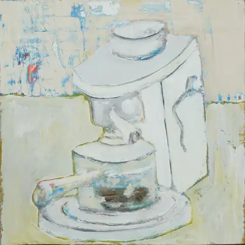
espresso machine2014 · painting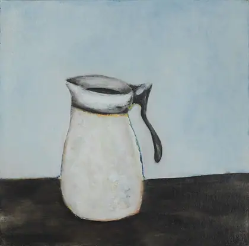
Coffee Carafe2014 · painting · +0 yr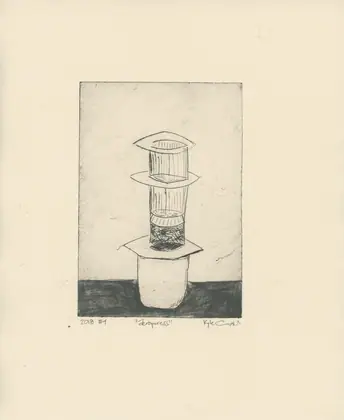
Aeropress2018 · printmaking · +4 yrTwo paintings in 2014 and a drypoint in 2018, all of the same three objects on the same counter. The archive relates all three to each other, which makes this the only complete family in the catalogue — nothing else has three members that all point at one another.
Butterfly Conundrum
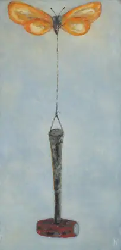
Butterfly Conundrum2015 · painting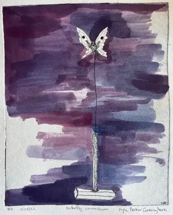
butterfly conundrum2021 · printmaking · +6 yr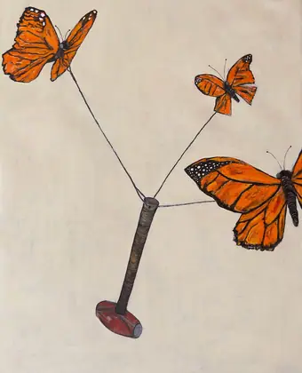
Docile2022 · painting · +7 yrA butterfly tethered to a tool. Painted, then cut into copper six years later, then painted again the year after that as Docile — where the tether is still there but the violence has gone out of it.
Rocket Propelled Clovis Point
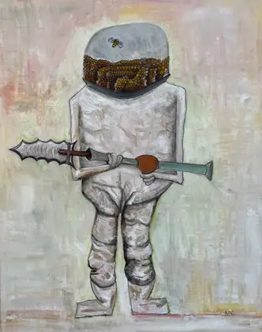
Rocket Propelled Clovis Point2020 · painting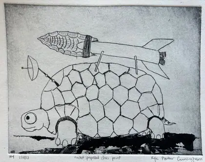
Rocket Propelled Clovis Point2022 · printmaking · +2 yrA 13,000-year-old projectile point with a rocket on it, made during the pandemic and re-cut two years later as a turtle carrying the same idea on its shell.
The juniper transplants
 Alligator Juniper2020 · printmaking
Alligator Juniper2020 · printmaking transplanter2021 · painting · +1 yr
transplanter2021 · painting · +1 yr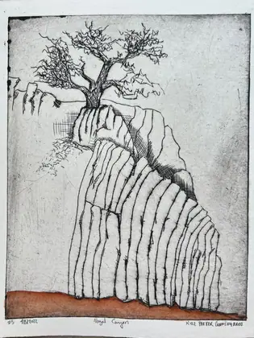
Nogal Canyon2022 · printmaking · +2 yr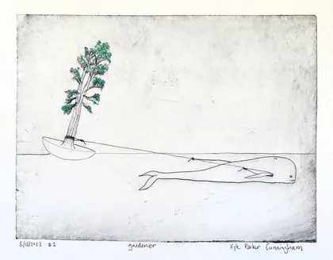
Gardener2023 · printmaking · +3 yrThe longest living line. A drawn tree becomes a tree carried across an ocean by an octopus in a coracle, becomes the canyon it grew in, becomes a gardener.
Faces, ten years apart
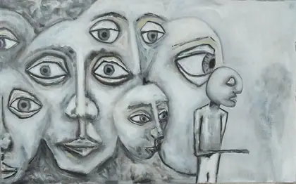
Substantial2015 · painting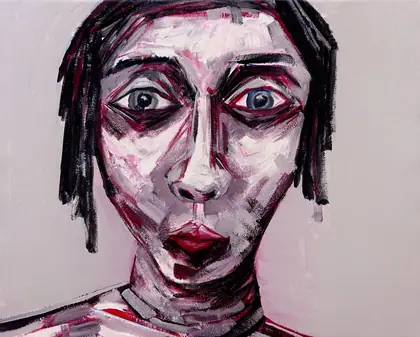
Visible2022 · painting · +7 yrSubstantial and Visible. Same scale, same closeness, same psychological pressure — one in grisaille, one in lavender and red, and seven years of being looked at in between.
Reworked
The earlier work no longer exists in the state it was catalogued in. Four works say this out loud; there are certainly more.
Cross-medium
Same image, different material, later. Sixteen works carry the cross-medium motif tag.
What's missing
The archive can express pendant, study, reworked and series, but every relation in the catalogue today is typed as other. Using the specific types would make this page draw itself.